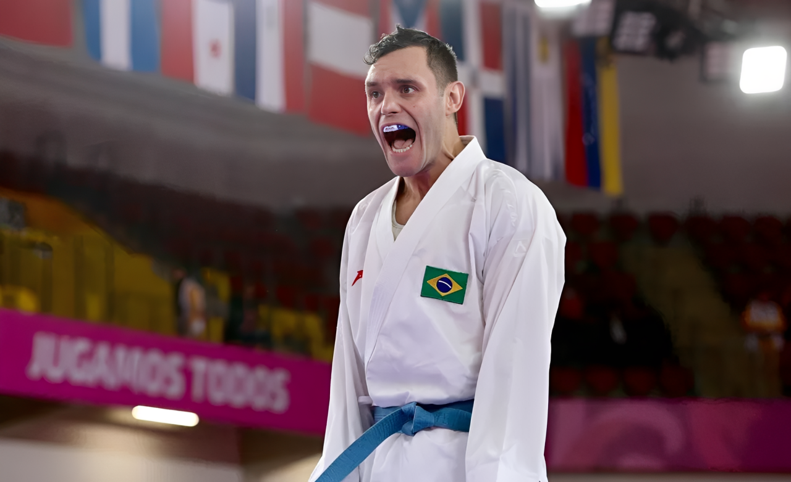
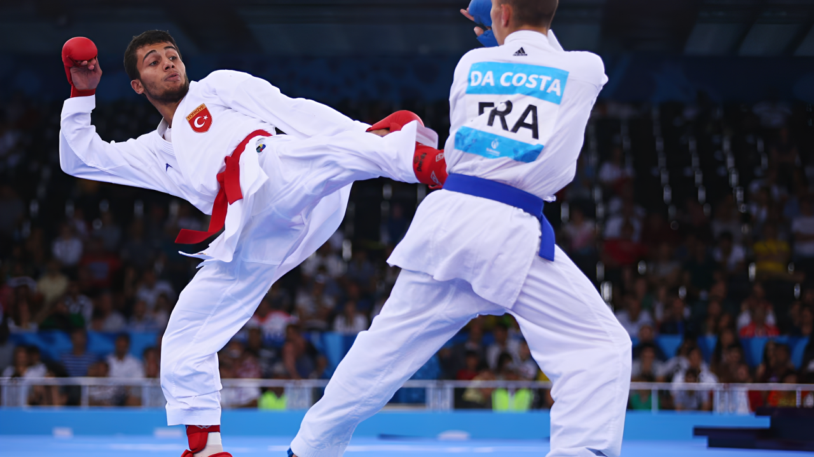

Desde 1984, o Karate Kid popularizou a arte marcial pelo mundo. No Brasil, o esporte se tornou uma paixão nacional e um celeiro de talentos.
O karatê chegou ao Brasil com os primeiros imigrantes japoneses, mas foi com o boom da cultura pop e filmes de artes marciais que a prática explodiu em academias de todo o país.
O Dia Nacional do Karatê, celebrado em 25 de Outubro, homenageia os mais de 5 milhões de praticantes brasileiros que dedicam suas vidas ao tatame, à disciplina e à construção de caráter através do esporte.


Nos Jogos Olímpicos de Tóquio 2020, o karatê realizou o sonho secular de fazer parte do maior palco esportivo do mundo. A competição ocorreu no lendário Nippon Budokan, a casa espiritual das artes marciais no Japão.
Com disputas emocionantes nas categorias de Kata (formas) e Kumite (combate), o esporte coroou campeões históricos, demonstrando ao mundo os valores de respeito, técnica e disciplina que definem a essência do karatê.